สไลด์ต้นฉบับของตอนนี้ (หน้า 2–10)
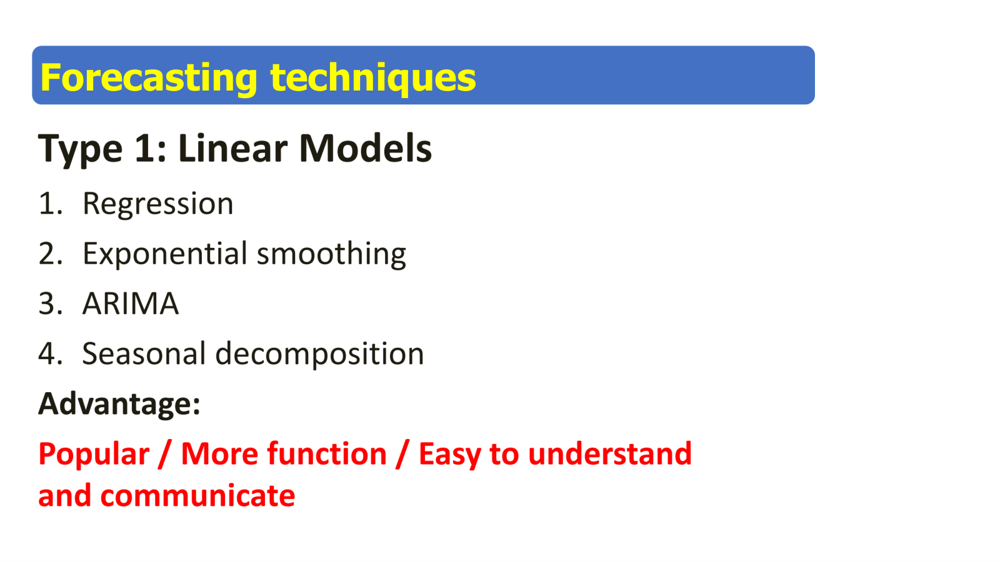
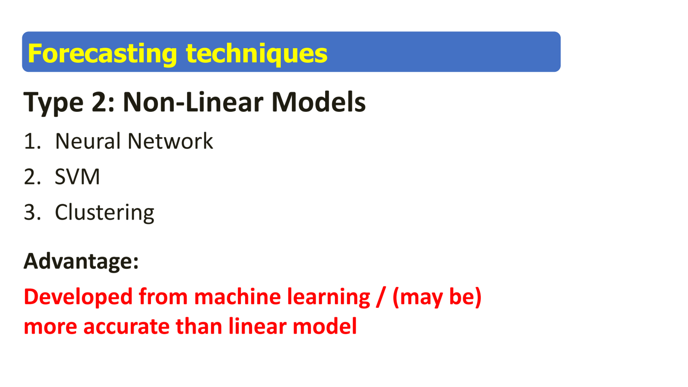

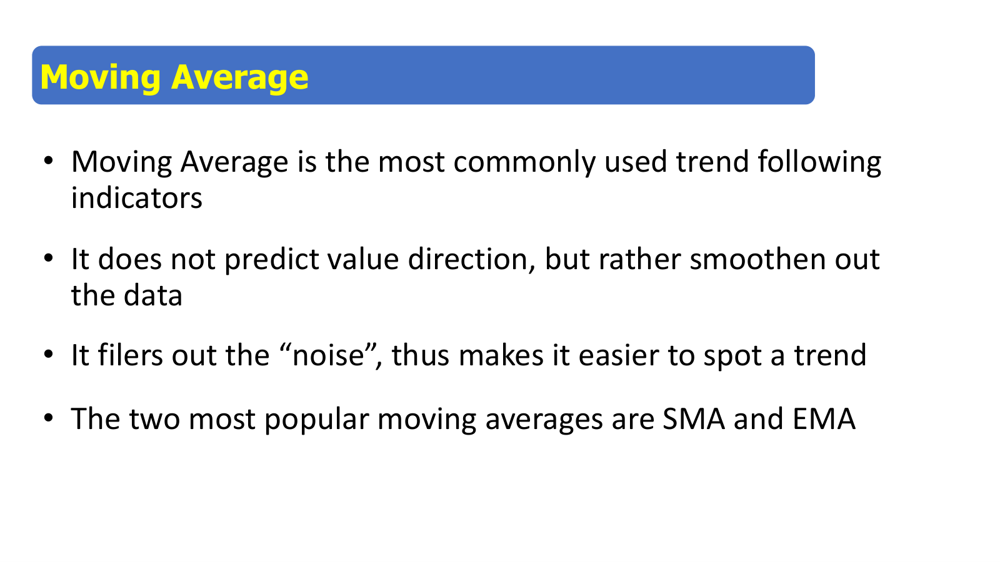
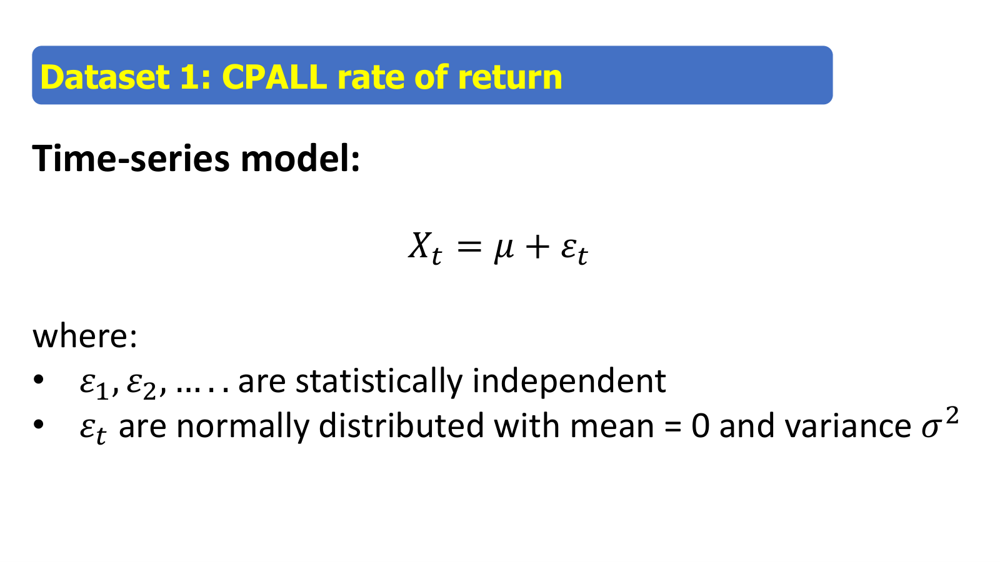


Slide 4 — Smoothing Methods และ Decomposition Models
บทนี้คือโมเดลพยากรณ์ชุดแรกที่ใช้กับข้อมูลจริง ทุกวิธีมีแนวคิดร่วมกันคือทำให้ข้อมูลเรียบเพื่อกรอง noise ออก แล้วยืดส่วนที่เหลือไปเป็นค่าพยากรณ์ เนื้อหาไล่จากง่ายไปซับซ้อน และแต่ละขั้นเกิดขึ้นเพราะขั้นก่อนหน้ามีจุดอ่อน SMA เฉลี่ย k ค่าล่าสุดเท่า ๆ กัน แต่ค่าเก่ากับค่าใหม่ไม่ควรสำคัญเท่ากัน EMA จึงให้น้ำหนักค่าใหม่มากกว่า แต่ EMA พยากรณ์เป็นเส้นราบ ใช้กับข้อมูลที่มี trend ไม่ได้ Holt จึงเพิ่มสมการของ trend แต่ Holt จับ seasonal ไม่ได้ Holt-Winters จึงเพิ่มสมการของ seasonal ทั้งหมดนี้อยู่ในตระกูล ETS ซึ่ง R เลือกให้อัตโนมัติ และสุดท้ายคือ decomposition ซึ่งแยก trend กับ seasonal ออกจากกันตรง ๆ วิธีที่ใช้ regression อาจดีพอ ๆ กับ ETS ช่วงนี้ของวิชาเป็น exponential smoothing กับ decomposition หลังจากนั้นอีกสองสามคาบเป็น Box-Jenkins (ARIMA) และปลายวิชามี neural network กับ Facebook Prophet เล็กน้อย ส่วน deep learning อยู่ในวิชาอื่น1 วิธีในบทนี้เข้าใจง่ายและอธิบายให้คนอื่นฟังได้ง่ายกว่า deep learning แต่ไม่ได้แปลว่าแย่กว่า machine learning เสมอไป2 โปรเจกต์ปลายภาคต้องมีโมเดล exponential หนึ่งตัวไปเทียบด้วย3
เรื่องควิซของบทนี้มีข้อควรรู้สามข้อ ข้อแรก ถ้าควิซให้คำนวณ RMSE หรือ MAE ให้ใช้เฉพาะ test set และทำเหมือนไม่รู้ test set ตอนสร้างโมเดล4 ข้อสอง ควิซเป็น open book ใช้คอมพิวเตอร์ได้แต่ไม่ใช้ AI ไม่ต้องจำสูตร แต่ต้องระวังตัวห้อยให้ถูก5 ข้อสาม ควิซ exponential smoothing ให้ทำด้วย Excel ไม่ใช่ R เพราะ R จะเลือกค่าเริ่มต้นและพารามิเตอร์ให้เอง ผลจึงไม่ตรงกับการคำนวณมือ และจะบอกค่าเริ่มต้นให้ในโจทย์6
เทคนิคพยากรณ์แบ่งได้สองตระกูล ตระกูลแรกคือโมเดลเชิงเส้น ได้แก่ regression, exponential smoothing, ARIMA และ seasonal decomposition ซึ่งนิยม ใช้งานได้หลายแบบ และอธิบายง่าย วิชานี้อยู่ในตระกูลนี้เกือบทั้งหมด และ regression ในวิชานี้ไม่ได้ศึกษาความเป็นเหตุเป็นผล แค่ใช้หา intercept กับ slope ของ trend7 ตระกูลที่สองคือโมเดลไม่เชิงเส้น เช่น neural network, SVM และ clustering ซึ่งพัฒนามาจาก machine learning และ "อาจ" แม่นกว่า คำว่าอาจในวงเล็บสำคัญ เพราะข้อมูลอนุกรมเวลาสั้น ๆ ที่มีรูปแบบชัดมักพยากรณ์ด้วยโมเดลเชิงเส้นได้ดีพอหรือดีกว่า
ข้อมูลจริงมักมองเห็น trend ได้ยากเพราะมีการขึ้นลงแบบสุ่ม การกำจัด noise ทำให้ข้อมูลเรียบขึ้น วิธีหนึ่งคือ Moving Means (or Moving Averages). ซึ่งออกแบบมาเพื่อทำให้ข้อมูลเรียบ8 เหมือนมองภูเขาจากระยะไกล รายละเอียดของหินแต่ละก้อนหายไป เหลือรูปทรงของภูเขา moving average เป็นตัวชี้วัด trend ที่ใช้มากที่สุด มันไม่ได้ทำนายทิศทาง แต่ทำให้มองเห็น trend ง่ายขึ้น ข้อเสียคือทุกค่าในหน้าต่างมีส่วนในค่าเฉลี่ย ค่าสุดโต่งค่าเดียวจึงดึงค่าเฉลี่ยได้มาก สไลด์แนะนำให้เลือกความยาวของหน้าต่างเท่ากับรอบของ seasonal เช่น ข้อมูลรายเดือนใช้ 12 รายไตรมาสใช้ 4 รายวันใช้ 7 เพราะเมื่อเฉลี่ยครบหนึ่งรอบ ทุกฤดูถูกนับเท่ากัน ผลของฤดูจึงหักล้างกัน เหลือแต่ trend หลักนี้คือที่มาของ centered moving average ในตอนที่ 5 แบบที่นิยมคือ SMA และ EMA โดย SMA มีไว้ให้เข้าใจแนวคิด ส่วน EMA แตกเป็นได้หลายชนิด9
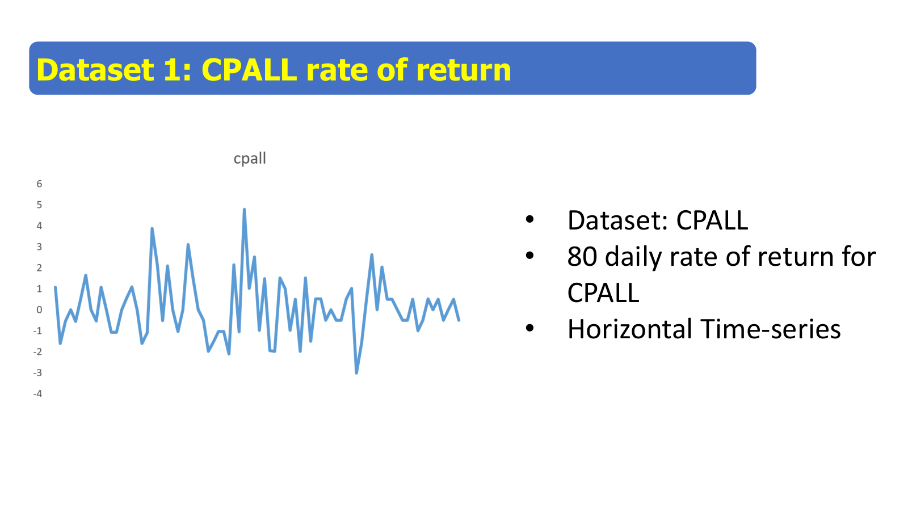
ข้อมูลชุดแรกคืออัตราผลตอบแทนรายวัน 80 วันของหุ้น CPALL ค่าแกว่งระหว่างราว −3 ถึง 4.8 รอบ 0 ไม่มี trend และไม่มี seasonal เพราะราคาหุ้นโดยธรรมชาติไม่มี seasonal10 สไลด์เรียกลักษณะนี้ว่าอนุกรมแนวราบ (horizontal) ข้อมูลแบ่งเป็น train 65 วันแรก และ test 15 วันท้าย อัตราผลตอบแทนเขียนได้สองแบบ คือ \(R_t=(P_t-P_{t-1})/P_{t-1}\) หรือ \(R_t=\log(P_t/P_{t-1})\) ซึ่งไม่เท่ากัน จึงต้องเลือกใช้แบบเดียว ค่า 0 คือเท่าทุน บวกคือกำไร ลบคือขาดทุน11 เช่น ราคา 60 บาทขึ้นเป็น 61.2 บาท แบบแรกได้ 0.02 แบบ log ได้ \(\ln(1.02)=0.0198\) โมเดลที่เข้ากับข้อมูลแนวราบคือ \(X_t=\mu+\varepsilon_t\) ค่าเฉลี่ยคงที่บวก noise ที่อิสระและแจกแจงปกติ สำหรับ CPALL μ = 0 สิ่งเดียวที่ต้องประมาณคือระดับ μ และ SMA กับ EMA ทำหน้าที่นี้
SMA คือค่าเฉลี่ยของ k ค่าล่าสุด ต้องกำหนด k ก่อน เช่น k = 3 จะได้ \(F_4=(X_4+X_3+X_2)/3\) หรือ \(F_{10}=(X_{10}+X_9+X_8)/3\)12 สูตรทั่วไปบนสไลด์เขียนตัวสุดท้ายในตัวเศษเป็น \(X_{t-k}\) ซึ่งผิด ตัวสุดท้ายต้องเป็น \(X_{t-k+1}\)13 เพราะนับจาก \(X_t\) ลงไปถึง \(X_{t-k}\) จะมี k + 1 ตัว แต่เราต้องการ k ตัว สูตรที่ถูกคือ
\(F_t=\dfrac{X_t+X_{t-1}+\dots+X_{t-k+1}}{k}\)
ตรวจด้วย k = 3 และ t = 4 ตัวสุดท้ายคือ \(X_{4-3+1}=X_2\) ตรงกับตัวอย่าง SMA มีสองแบบ14 แบบ trailing ใช้ค่าปัจจุบันกับค่าย้อนหลัง เช่น \(F_{10}=(X_{10}+X_9+X_8)/3\) ส่วนแบบ centered ให้ค่าปัจจุบันอยู่ตรงกลาง เช่น \(F_{10}=(X_{11}+X_{10}+X_9)/3\) แบบหลังใช้ค่าอนาคตมาด้วย จึงใช้พยากรณ์ไม่ได้ แต่ใช้หา trend ใน decomposition
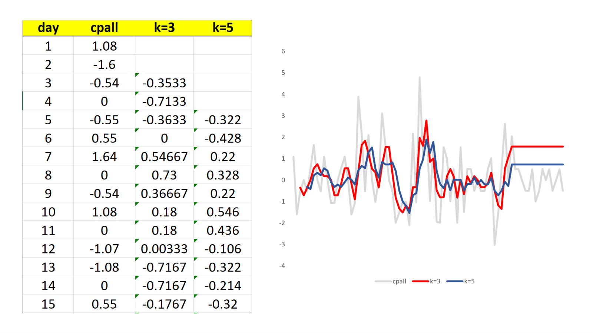
ตารางนี้มาจากไฟล์ Smoothing Examples ของวิชา CPALL วันที่ 1–7 คือ 1.08, −1.6, −0.54, 0, −0.55, 0.55, 1.64 คอลัมน์ k = 3 เริ่มมีค่าที่วันที่ 3 คือ \((1.08-1.6-0.54)/3=-1.06/3=-0.3533\) วันที่ 4 คือ \((-1.6-0.54+0)/3=-2.14/3=-0.7133\) ซึ่งคิดเร็วได้ด้วยค่าเดิมบวก (ค่าใหม่ลบค่าที่หลุด)/k คือ \(-0.3533+(0-1.08)/3=-0.7133\) คอลัมน์ k = 5 เริ่มที่วันที่ 5 คือ \((1.08-1.6-0.54+0-0.55)/5=-1.61/5=-0.322\)15 ค่าแรก ๆ หายไปเพราะต้องมีข้อมูลครบ k ค่าก่อนจึงเฉลี่ยได้ k = 3 หาย 2 ค่าแรก เหลือ 78 จาก 80 และ k = 5 หาย 4 ค่าแรก16 ในกราฟ ข้อมูลเดิมแกว่งระหว่าง −3 ถึง 5 เส้น k = 3 แกว่งแคบลงเหลือราว −1.5 ถึง 2.8 และเส้น k = 5 แคบกว่านั้น ยิ่ง k มากยิ่งเรียบ แต่ตามการเปลี่ยนแปลงช้าลง ช่วงท้ายของกราฟเป็นเส้นราบ ซึ่งคือค่าพยากรณ์ของ test set ค่า \(F_{65}\) ค่าเดียวถูกใช้พยากรณ์วันที่ 66 ถึง 80 ทั้งหมด เพราะทำเหมือนไม่รู้ค่าใน test set จึงต่อค่าเฉลี่ยไม่ได้ ผลคือ SMA เหมาะกับการพยากรณ์ระยะสั้นแค่ 1 จุด ไม่เหมาะกับระยะยาว17
SMA เหมาะกับข้อมูลแนวราบและการพยากรณ์ระยะสั้น ค่า k ตั้งแต่ 2 ถึง 5 ใช้ได้กับกรณีส่วนใหญ่ ข้อมูลที่แกว่งมากใช้ k สูง ข้อมูลที่แกว่งน้อยใช้ k ต่ำ ระหว่าง k = 3 กับ k = 5 อันที่เรียบกว่าคือ k = 5 แต่ถ้า k มากเกินไปจะลบทุกอย่างทิ้ง ทั้ง seasonal และ trend ข้อมูลที่แกว่งเยอะอาจใช้ k มากกว่า 5 และนักลงทุนบางคนใช้ค่าเฉลี่ย 10–20 วัน18 โดยรวม SMA ง่ายเกินไปและเหมาะกับการสอนมากกว่าการใช้งานจริง19 ใน R ใช้ rollmean() ได้ค่าสุดท้ายของ train เป็น 1.5533 และ error บน test คือ RMSE 1.663 กับ MAE 1.586 การวัด error บน train เรียกว่า self-validation และบน test เรียกว่า cross-validation วิชานี้เน้นแบบหลัง เพราะจุดประสงค์ของอนุกรมเวลามักเป็นการพยากรณ์ไปข้างหน้า20
library(zoo); library(forecast)
data <- ts(read.table("CPALL.txt", h = T))
train.ts <- window(data, start = 1, end = 65); test.ts <- window(data, start = 66, end = 80)
ma.trailing <- rollmean(train.ts, k = 3, align = "right") # 63 ค่า; "center" ได้แบบ centered
accuracy(ma.trailing, train.ts) # self-validation
forecast <- rep(ma.trailing[63], 15) # ค่าสุดท้าย 1.5533 ซ้ำ 15 ครั้ง
accuracy(forecast, test.ts) # cross-validation: RMSE 1.663, MAE 1.586accuracy(f, x) ใส่ค่าพยากรณ์ก่อนค่าจริง ตามที่อธิบายใน Lesson 2




ปัญหาของ SMA คือให้น้ำหนัก 1/k เท่ากันทุกค่าในหน้าต่าง ค่าเมื่อสามวันก่อนสำคัญเท่าค่าเมื่อวาน แล้วพอหลุดหน้าต่างก็สำคัญเป็นศูนย์ทันที EMA แก้ข้อนี้โดยให้จุดเวลาสำคัญไม่เท่ากัน ค่าล่าสุดน้ำหนักมาก และยิ่งไกลยิ่งลดน้ำหนัก21 เหมือนความจำของคน เรื่องเมื่อวานจำชัด เรื่องเมื่อปีก่อนจำได้รางเลือน แต่ไม่ได้ลืมสนิท ถ้าเขียนน้ำหนักออกมาจะได้ \(F_{10}=\alpha X_9+\alpha(1-\alpha)X_8+\alpha(1-\alpha)^2X_7+\dots\) โดย \(0<\alpha<1\)22 ถ้า α = 0.2 น้ำหนักคือ 0.2, 0.16, 0.128, 0.1024 ลดลง 20% ทุกช่วงเวลา จึงเรียกว่า exponential เมื่อดึง \((1-\alpha)\) ออกจากพจน์ที่สองเป็นต้นไป สิ่งที่เหลือในวงเล็บคือ \(F_9\) จึงได้รูปสั้น
\(F_{t+1}=\alpha X_t+(1-\alpha)F_t\)
ค่าพยากรณ์ใหม่จึงเป็นค่าเฉลี่ยถ่วงน้ำหนักระหว่างค่าจริงล่าสุดกับค่าพยากรณ์เดิม น้ำหนักรวมทั้งหมดเท่ากับ \(\alpha\sum_{j\ge0}(1-\alpha)^j=\alpha\cdot\frac{1}{\alpha}=1\) จึงเป็นค่าเฉลี่ยที่ถูกต้อง α ใหญ่ทำให้ตามข้อมูลใหม่เร็ว α เล็กทำให้เรียบ สูตรนี้อ้างถึงตัวเอง จึงต้องมีค่าเริ่มต้น \(F_1\) ซึ่งใช้ \(X_1\) หรือค่าเฉลี่ย 3 หรือ 5 ค่าแรกก็ได้ ถ้าข้อมูลยาวพอผลจะลู่เข้าสู่ค่าเดียวกัน และ R จะเลือกทั้งค่าเริ่มต้นและ α ให้เอง23 ในไฟล์ Excel ค่าเริ่มต้นคือค่าเฉลี่ยสามค่าแรก \(F_1=-0.3533333\)24

ค่าเฉลี่ยสามวันแรก \((1.08-1.6-0.54)/3=-0.3533\) ซึ่งเท่ากับ SMA k = 3 ของวันที่ 3
\(0.2(1.08)+0.8(-0.3533)=0.216-0.2827=-0.067\)
\(0.2(-1.6)+0.8(-0.067)=-0.32-0.0533=-0.373\)
\(0.2(-0.54)+0.8(-0.373)=-0.108-0.2987=-0.407\)
ค่าสุดท้ายของ train คือ \(X_{65}=2.04\) และ \(F_{65}=0.128\) จึงได้ \(F_{66}=0.2(2.04)+0.8(0.128)=0.408+0.1025=0.510\) ใช้ \(X_{65}\) ได้เพราะอยู่ใน train แต่ใช้ \(X_{66}\) ไม่ได้ ค่า 0.510 ค่าเดียวจึงพยากรณ์วันที่ 66–80 ทั้งหมด25
เส้น EMA ในกราฟแกว่งแคบราว −1 ถึง 1.1 เรียบกว่า SMA k = 5 เพราะ α = 0.2 ให้ค่าล่าสุดแค่ 20% ในตารางนี้ แถวของวัน t คือค่าพยากรณ์ของวัน t ที่คำนวณจากข้อมูลถึงวัน t − 1 EMA เหมาะกับข้อมูลแนวราบและการพยากรณ์ระยะสั้นเช่นเดียวกับ SMA ค่า α ที่นิยมคือ 0.1 ถึง 0.2 (หัวเรื่องของสไลด์หน้า 13 พิมพ์ว่า "(SMA)" ที่ถูกคือ EMA)
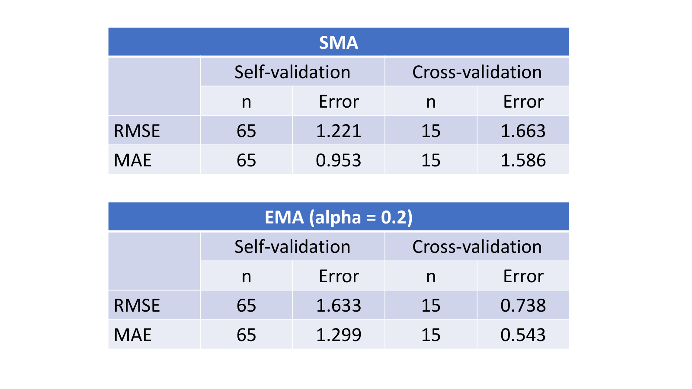
เมื่อเทียบสองวิธี บน train SMA k = 3 ได้ RMSE 1.221 และ MAE 0.953 ส่วน EMA α = 0.2 ได้ 1.633 และ 1.299 SMA จึงดูดีกว่า แต่บน test SMA ได้ 1.663 และ 1.586 ขณะที่ EMA ได้เพียง 0.738 และ 0.543 ค่าที่รันจริงตรงกับสไลด์ทุกค่า ระหว่างสองโมเดลนี้จึงเลือก EMA26 เพราะตัดสินที่ test ตามหลักใน Lesson 2 ว่าผลบนข้อมูลที่ใช้สร้างโมเดลไม่ใช่ตัวตัดสิน ข้อควรระวังคือในคลิปอ่านค่าจาก Excel ได้ 0.789 และ 0.56527 ซึ่งไม่ตรงกับสไลด์ เมื่อคำนวณซ้ำจากค่าจริง 15 วัน (0.5, 0.5, 0, −0.5, −0.5, 0.5, −1, −0.5, 0.51, 0, 0.5, −0.5, 0, 0.5, −0.5) กับค่าพยากรณ์ 0.510 ได้ RMSE = 0.738 และ MAE = 0.543 ตรงกับสไลด์และ R
ใน R ใช้ ets(train.ts, model = "ANN", alpha = 0.2) ค่าพยากรณ์ $mean คือ 0.5105 ส่วน $fitted คือค่าใน train ซึ่ง "ไม่มีประโยชน์เท่าไหร่" forecast() แสดงช่วง 80% และ 95% เป็นค่าเริ่มต้น ค่าเริ่มต้นที่ R ประมาณคือ l = −0.0336 ไม่ใช่ −0.3533 แบบ Excel ค่าพยากรณ์จึงต่างจาก Excel เล็กน้อยในทศนิยมหลักท้าย28 ถ้าไม่กำหนด α R จะเลือกได้ α = 0.0001 ซึ่งเกือบเป็นค่าเฉลี่ยคงที่ เพราะข้อมูลแนวราบที่แกว่งแบบสุ่มพยากรณ์ได้ดีที่สุดด้วยค่าเฉลี่ยระยะยาว นี่คือเหตุผลที่ควิซให้ทำด้วย Excel และบอกค่าเริ่มต้นให้
library(forecast)
ema <- ets(train.ts, model = "ANN", alpha = 0.2) # ไม่ใส่ alpha ให้ R เลือก
forecast(ema, h = 15, level = 0) # level = 0 ไม่แสดงช่วงความเชื่อมั่น
fc <- forecast(ema, h = 15)$mean # $mean คือค่าพยากรณ์
accuracy(fc, test.ts)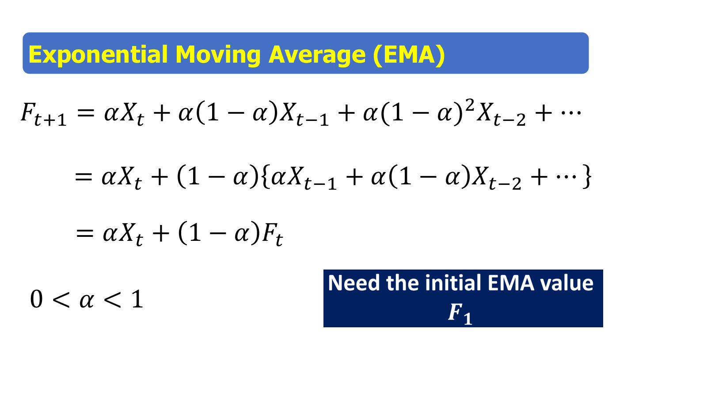
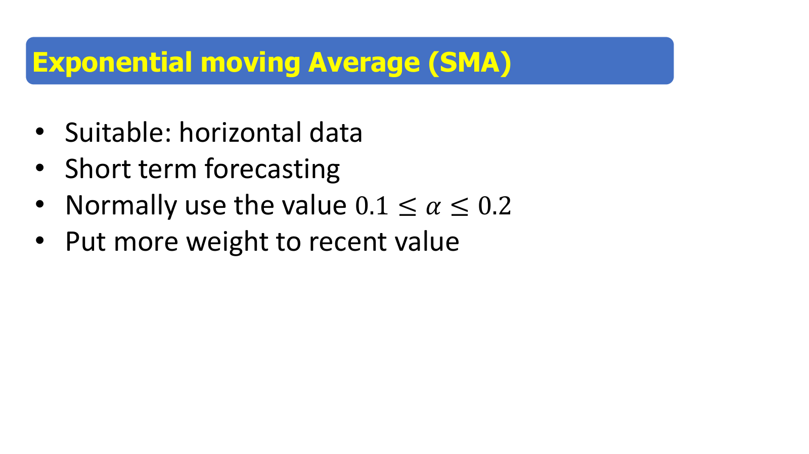
ตระกูล exponential smoothing มีสามชนิด29 single EMA มีหนึ่งสมการ ใช้กับข้อมูลที่ไม่มี trend และไม่มี seasonal double EMA หรือ Holt มีสองสมการ จับ trend ได้ triple EMA หรือ Holt-Winters มีสามสมการ จับทั้ง trend และ seasonal โดย Winters เป็นลูกศิษย์ของ Holt ใน R คำสั่ง ets() คำสั่งเดียวครอบคลุมทั้งสามชนิด และเลือกตัวที่ AIC ดีที่สุดให้ เราจึงควรเข้าใจแนวคิดไว้ แต่การคำนวณจริงให้โปรแกรมทำ30 ข้อดีที่สไลด์ระบุคือคำนวณเร็ว ชื่อ ETS มีสามตำแหน่งเรียงกันคือ error, trend, seasonal31 แต่ละตำแหน่งใช้ตัวอักษรหนึ่งตัว N คือไม่มี A คือแบบบวก (trend เป็นเส้นตรง seasonal แกว่งเท่าเดิม) M คือแบบคูณ (trend เป็นเส้นโค้ง seasonal แกว่งกว้างขึ้นตามระดับ) Ad คือ trend แบบบวกที่ค่อย ๆ ชะลอ และ Z คือให้ R เลือก CPALL ไม่มีทั้ง trend และ seasonal จึงเป็น ANN32 ตำแหน่งของ error ดูจากกราฟยาก ให้โปรแกรมเลือก ส่วน trend กับ seasonal ดูจากกราฟได้33
สไลด์หน้า 19 จับคู่รูปร่างของกราฟกับชื่อโมเดลไว้สิบสองแบบ เพื่อให้ดูรูปแล้วตัดสินใจเอง34 แถวคือชนิดของ trend ได้แก่ ไม่มี เส้นตรง (additive) เส้นโค้งชันขึ้น (multiplicative หรือ exponential) และพหุนาม คอลัมน์คือชนิดของ seasonal ได้แก่ ไม่มี additive และ multiplicative ความต่างของสองคอลัมน์หลังคือ additive แกว่งเท่าเดิม ส่วน multiplicative ช่วงแรกแกว่งน้อยและช่วงท้ายแกว่งมาก ARIMA ที่จะเรียนในอีกสองสัปดาห์แก้ปัญหานี้อีกแบบหนึ่ง คือ take log35 วิธีจัดกราฟลงตารางคือดูเส้นกลางเพื่อเลือกแถว ดูว่ามีคลื่นซ้ำหรือไม่ แล้วดูว่าความสูงของคลื่นคงที่หรือโตตามเส้นกลาง โมเดลพื้นฐานมีสองแบบ แบบบวก \(Y_t=\text{Level}+\text{Trend}+\text{Seasonality}+\text{Noise}\) และแบบคูณ \(Y_t=\text{Level}\times\text{Trend}\times\text{Seasonality}\times\text{Noise}\) ซึ่งเป็นแนวคิดเดียวกับ decomposition ใน Lesson 1 แต่แยก level ออกจาก trend ชัดขึ้น level คือระดับปัจจุบัน trend คืออัตราที่ระดับเปลี่ยน เทียบกับรถยนต์ level คือตำแหน่งที่รถอยู่ และ trend คือความเร็ว
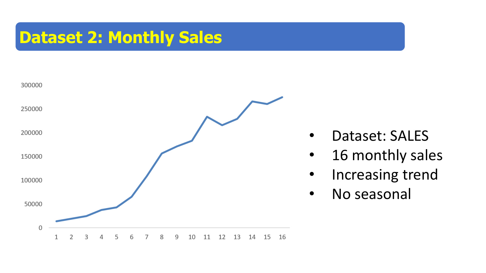
EMA พยากรณ์เป็นเส้นราบ ถ้าข้อมูลมี trend ขาขึ้น ค่าพยากรณ์จะต่ำกว่าจริงตลอด เพราะ EMA เฉลี่ยจากอดีตซึ่งต่ำกว่าปัจจุบันเสมอ ข้อมูลยอดขายรายเดือนชุดนี้แสดงปัญหานั้นชัด36 ยอดขาย 16 เดือนเริ่มที่ 13,931 ขึ้นเร็วช่วงเดือน 6–8 จาก 65,225 เป็น 156,508 ถึง 233,715 ในเดือน 11 ลดเล็กน้อยในเดือน 12 แล้วขึ้นต่อจนจบที่ 274,515 มี trend ขาขึ้นและไม่มี seasonal โมเดลจึงเป็น \(X_t=a+bt+\varepsilon_t\) ซึ่งคือ simple linear regression บวก error37 a คือระดับ b คือความชันของ trend เทียบกับ CPALL ระดับคงที่ μ ถูกแทนด้วยเส้นตรง a + bt จึงต้องมีส่วนที่ติดตามความชันเพิ่ม
Holt มองว่าข้อมูลมี level \(L_t\), trend \(T_t\) และ noise ที่พยากรณ์ไม่ได้ จึงมีสมการปรับค่าสองสมการ โดย α ใช้กับ level และ β ใช้กับ trend ทั้งคู่อยู่ระหว่าง 0 ถึง 1 และต้องคำนวณ L ก่อนแล้วค่อย T38 เหมือนการติดตามรถที่กำลังวิ่ง ต้องรู้ทั้งตำแหน่งปัจจุบันและความเร็ว ทุกครั้งที่เห็นรถใหม่ก็ปรับทั้งสองค่า สิ่งที่สำคัญที่สุดของคาบนี้คือสมการพยากรณ์ k ช่วงข้างหน้า39
\(F_{t+k}=L_t+k\,T_t\)
ถ้าข้อมูลถึงเวลา 50 จะได้ \(F_{51}=L_{50}+T_{50}\), \(F_{52}=L_{50}+2T_{50}\), \(F_{53}=L_{50}+3T_{50}\) ค่าพยากรณ์จึงไม่ใช่เลขเดียวอีกต่อไป40 ต่างจาก SMA และ EMA ที่เป็นเส้นราบ เช่น \(L_t=200\) และ \(T_t=5\) ได้ 205, 210, 215 จุดที่มักพลาดคือใช้ \(L_{t+k-1}\) หรือ \(T_{t+k}\) ซึ่งยังไม่มีในอนาคต ต้องใช้ค่าล่าสุดที่รู้เท่านั้น สมการปรับ level คือ \(L_t=\alpha Y_t+(1-\alpha)(L_{t-1}+T_{t-1})\) ซึ่งคล้าย EMA แต่ค่าเดิมที่นำมาผสมคือ \(L_{t-1}+T_{t-1}\) คือตำแหน่งที่คาดไว้ถ้าเดินต่อตามความชันเดิม และเท่ากับค่าพยากรณ์ \(F_t\) พอดี สมการจึงผสมค่าจริงกับค่าที่คาดไว้ โดย α ควบคุมว่าจะเชื่อค่าจริงมากแค่ไหน สมการปรับ trend คือ \(T_t=\beta(L_t-L_{t-1})+(1-\beta)T_{t-1}\) ส่วน \(L_t-L_{t-1}\) คือความชันที่เพิ่งวัดได้ สมการนี้ผสมความชันใหม่กับความชันเดิมด้วยโครงสร้างเดียวกับ EMA ต่างกันที่สิ่งที่ปรับเรียบคือความชัน ไม่ใช่ระดับ
ถ้า trend เป็นเส้นโค้งที่โตเป็นสัดส่วน ใช้แบบคูณ ค่าพยากรณ์คือ \(F_{t+k}=L_t\times T_t^{\,k}\) โดย \(T_t\) เป็นอัตราการเติบโต เช่น 1.05 หมายถึงโต 5% ต่อช่วง และ \(F_{52}=L_{50}\cdot T_{50}^2\)41 เช่น \(L_t=100\) และ \(T_t=1.1\) ได้ 110, 121, 133.1 ซึ่งเพิ่มครั้งละมากขึ้น วิธีจำสมการแบบคูณคือเปลี่ยนบวกเป็นคูณ และเปลี่ยนลบเป็นหาร42 จึงได้ \(L_t=\alpha Y_t+(1-\alpha)(L_{t-1}T_{t-1})\) และ \(T_t=\beta(L_t/L_{t-1})+(1-\beta)T_{t-1}\) ความชันที่เคยเป็นผลต่างกลายเป็นอัตราส่วน ตำแหน่งแรกของ ETS คือชนิดของ error แบบบวกสมมติว่า error มีขนาดคงที่ไม่ขึ้นกับระดับ เช่น \(y_{t+1}=L_t+T_t+e_t\) คือ ETS(A,A,N) และ \(y_{t+1}=L_tT_t+e_t\) คือ ETS(A,M,N) แต่ในหลายกรณีขนาดของ error โตตามระดับ จึงใช้ error แบบคูณซึ่งคูณด้วย (1 + e)43 เช่น \(y_{t+1}=(L_t+T_t)(1+e_t)\) คือ ETS(M,A,N) และ \(y_{t+1}=L_tT_t(1+e_t)\) คือ ETS(M,M,N) ถ้า \(e_t=0.1\) แปลว่าคลาด 10% ที่ระดับ 100 คือ 10 หน่วย และที่ระดับ 10,000 คือ 1,000 หน่วย สไลด์หน้า 29 แสดงรูปทรงของค่าพยากรณ์ 120 ช่วงของแต่ละโมเดล ไม่มี trend เป็นเส้นราบ trend แบบบวกเป็นเส้นตรง trend แบบคูณเป็นเส้นโค้งที่ชันขึ้นเรื่อย ๆ damped additive ขึ้นเร็วแล้วค่อย ๆ ราบ damped multiplicative เป็นรูปตัว S และแบบพาราโบลาเป็นเส้นโค้งกำลังสอง ส่วนคอลัมน์ seasonal เพิ่มคลื่นซ้อนบนเส้นเหล่านี้

ใน Excel ใช้ α = β = 0.5 และต้องมีค่าเริ่มต้น \(L_0=9000\) กับ \(T_0=5000\) ค่าเริ่มต้นนี้มาจากตัวอย่างใน YouTube และเลือกให้ \(L_0+T_0\) ใกล้กับ \(Y_1=13931\)44 การ์ดข้างล่างคำนวณทีละขั้นตามตาราง
\(L_0+T_0=9000+5000=14000\)
\(0.5(13931)+0.5(9000+5000)=6965.5+7000=13965.5\)
\(0.5(13965.5-9000)+0.5(5000)=2482.75+2500=4982.75\)
\(L_1+T_1=13965.5+4982.75=18948.25\)
\(L_2=0.5(19315)+0.5(18948.25)=19131.625\) และ \(T_2=0.5(19131.625-13965.5)+0.5(4982.75)=5074.44\)
\(L_{16}=277285.01\), \(T_{16}=9960.25\) จึงได้ \(F_{17}=287245.26\), \(F_{18}=L_{16}+2T_{16}=297205.51\), \(F_{19}=L_{16}+3T_{16}=307165.76\)45
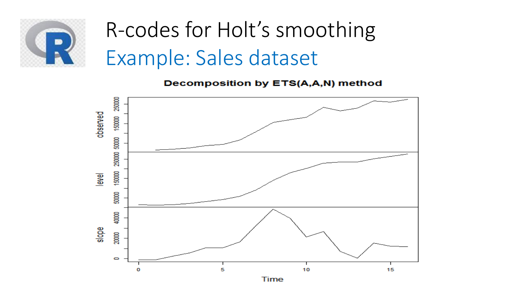
R แยกผลเป็นสามส่วน observed คือยอดขายจริง level คือเส้นเรียบของระดับ และ slope คือ \(T_t\) ของแต่ละเวลา slope ใกล้ 0 ช่วงต้น สูงสุดราว 47,000 ที่ t ประมาณ 8 ซึ่งเป็นช่วงที่ยอดขายพุ่ง แล้วลดลงเกือบ 0 ที่ t = 13 เมื่อยอดขายชะลอ ส่วน slope จึงตอบคำถามว่าขณะนั้นข้อมูลโตเร็วแค่ไหน เมื่อให้ R เลือกเอง ได้ ETS(A,A,N) ที่ alpha = 0.7851 คือ level เชื่อค่าจริงล่าสุดเกือบ 80% และ beta = 0.0001 คือความชันแทบไม่ปรับ ค่าเริ่มต้นที่ R ประมาณคือ l = −30284 และ b = 21062 ต่างจาก 9,000 กับ 5,000 ของ Excel ค่าพยากรณ์ t = 17–21 คือ 298,119.5, 319,177.6, 340,235.8, 361,294.0 และ 382,352.2 เพิ่มทีละ 21,058 ตามความชันล่าสุด ค่าไม่เท่า Excel เพราะ α, β และค่าเริ่มต้นต่างกัน และถ้าไม่ใส่ model R ก็เลือก AAN เหมือนเดิม46 ค่าพยากรณ์ของ R ที่ t = 17 จึงสูงกว่าของ Excel (287,245) เพราะ R ใช้ความชัน 21,062 ขณะที่ Excel ปรับความชันลงเหลือ 9,960 ตามข้อมูลช่วงท้ายที่ชะลอ สไลด์หน้า 32 มีผลของ ets(data, model = "ZZZ") จาก R รุ่นเก่า ซึ่งเลือก ETS(M,M,N) ที่ alpha = 0.9464, beta = 0.4598 และ AIC 359.30 แต่ package forecast รุ่นปัจจุบันเลือก ETS(A,A,N) ความต่างนี้มาจากรุ่นของ package ถ้าข้อสอบให้ output มา ให้อ่านตาม output ที่ให้ ส่วนล่างของหน้าเดียวกันเป็นโจทย์ฝึก Holt ด้วยข้อมูลรายไตรมาส 155, 180, 260, 560, 160, 185, 270, 600, 165, 190, 280, 635 ไตรมาส 4 สูงสุดทุกปี คือมี seasonal ชัด Holt ซึ่งไม่มีส่วน seasonal จะพยากรณ์ไตรมาส 4 ต่ำเกินทุกปี ข้อมูลแบบนี้ต้องใช้ Holt-Winters ในตอนถัดไป
library(forecast)
data <- ts(read.table("sales.txt", h = T))
holt.additive <- ets(data, model = "AAN") # ให้ R เลือก alpha, beta
holt.additive
forecast(holt.additive, h = 5, level = 0)
ets(data, model = "AAN", alpha = 0.5, beta = 0.5) # กำหนดเองETS(A,A,N) Smoothing parameters: alpha = 0.7851 beta = 1e-04 Initial states: l = -30284.4432 b = 21061.963 sigma: 22291.22 AIC 370.1398 AICc 376.1398 BIC 374.0028 Point forecast t = 17–21: 298119.5 319177.6 340235.8 361294.0 382352.2
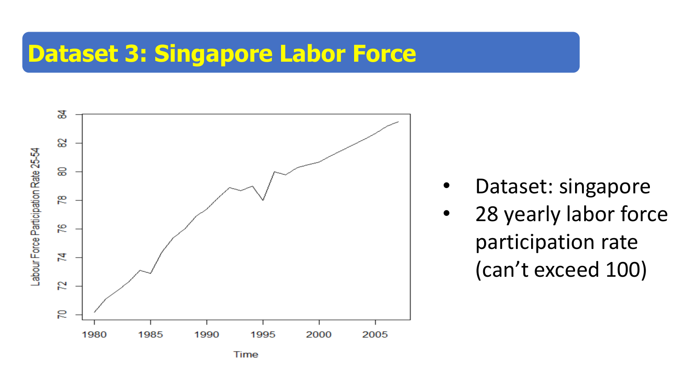
อัตราการมีส่วนร่วมในกำลังแรงงานรายปี 28 ปีของสิงคโปร์เพิ่มจาก 70.2% ในปี 1980 เกือบเป็นเส้นตรงถึง 83.5% สไลด์กำกับว่าค่านี้เกิน 100 ไม่ได้ ถ้าใช้เส้นตรงต่อไปเรื่อย ๆ ค่าพยากรณ์อาจทะลุร้อย ซึ่งเทียบได้กับเส้นรูปตัว S ของ logistic regression47 วิธีแก้คือ damped trend ซึ่งความชันโค้งเข้าแทนที่จะขึ้นไปเรื่อย ๆ R เลือก ETS(M,Ad,N) ซึ่ง Ad มาจาก additive damped และ error เป็นแบบคูณ48 ได้ alpha = 0.528, beta = 0.0001, phi = 0.959, l = 69.3963, b = 0.868 และ AIC 62.09 φ คือพารามิเตอร์หน่วงความชัน ค่าพยากรณ์ k ก้าวข้างหน้าใช้ความชันรวม \(T_t(\phi+\phi^2+\dots+\phi^k)\) แทน \(kT_t\) ถ้า φ = 0.959 และ k = 15 ผลรวมจะเป็นราว 10.9 แทนที่จะเป็น 15 ความชันรวมจึงถูกหน่วงลงราวหนึ่งในสี่ ค่าพยากรณ์ปี 2022 จึงอยู่ที่ราว 86–87 แทน 89 โดยจาก Holt ธรรมดาคือ 89.32 จาก Holt damped คือ 86.88 และจาก ETS(M,Ad,N) คือ 86.35 ในทางปฏิบัติ damped ไม่ค่อยพบ ถ้าข้อมูลไม่ได้เป็นเปอร์เซ็นต์ก็อาจไม่ต้องใช้ และถ้าไม่แน่ใจ ใช้ ets() อย่างเดียวก็พอ49 ค่า φ ของ holt(damped = TRUE) คือ 0.967 ต่างจาก ets() เล็กน้อยเพราะเป็นคนละคำสั่ง
singapur <- ts(read.table("singapore.txt"), start = 1980)
holt(singapur, h = 15) # Holt ธรรมดา
holt(singapur, h = 15, damped = TRUE) # เพิ่มพารามิเตอร์ phi
ets(singapur) # ให้ R เลือกETS(M,Ad,N) alpha = 0.528 beta = 1e-04 phi = 0.959 l = 69.3963 b = 0.868 AIC 62.09 พยากรณ์ปี 2022 (15 ปีข้างหน้า): holt 89.32 holt damped 86.88 ets(M,Ad,N) 86.35


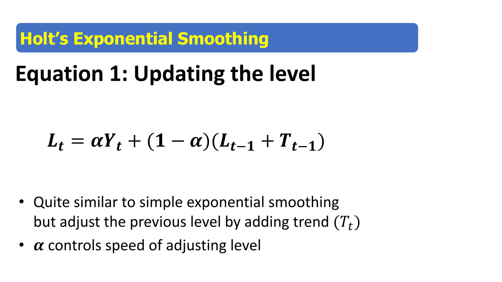
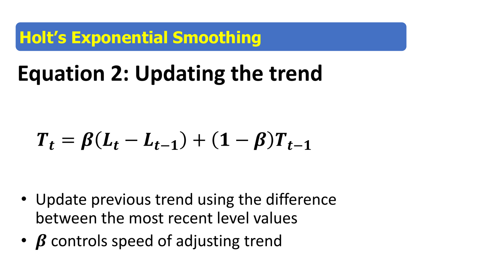
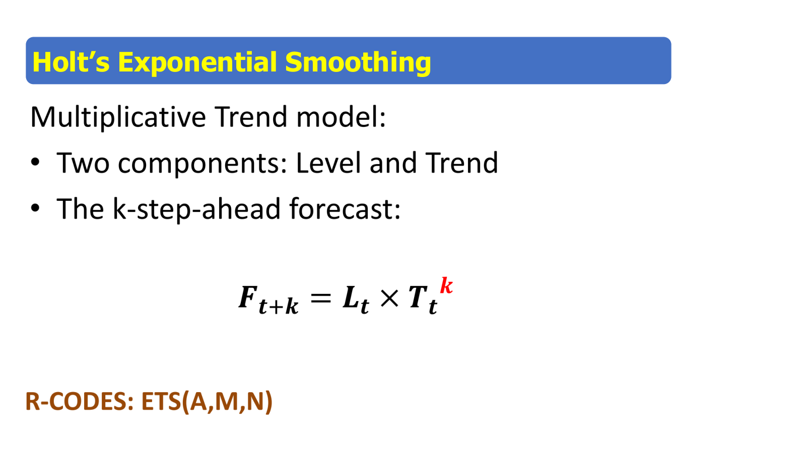

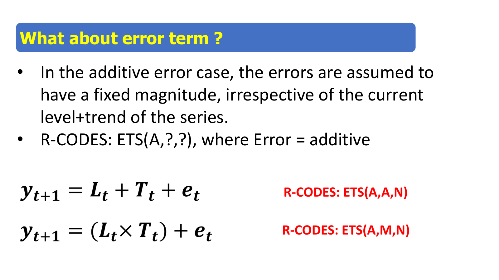
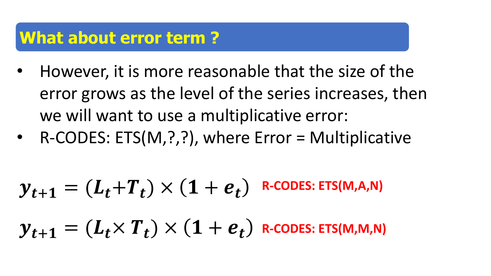
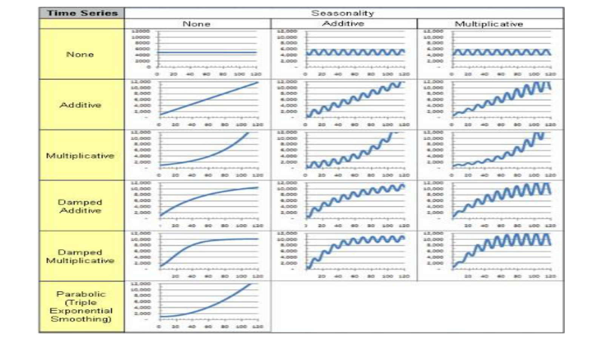

Holt จับ trend ได้ แต่ถ้าข้อมูลมีรูปแบบซ้ำตามฤดู เช่น ไตรมาส 4 สูงทุกปี Holt จะพยากรณ์ไตรมาสนั้นต่ำเกินเสมอ Holt-Winters จึงเพิ่มสมการที่สามสำหรับ seasonal วิธีนี้ไม่สอนคำนวณมือเพราะมีถึงสามสมการ50 สิ่งที่ต้องได้คือเข้าใจสมการ รู้ว่าพารามิเตอร์ตัวไหนคู่กับอะไร และอ่านผลของ R ได้ สไลด์เล่าว่า Charles C. Holt เป็นศาสตราจารย์ที่ University of Texas at Austin และเป็นที่รู้จักจากงานของตัวเองและของ his student, Peter Winters สรุปสั้น ๆ ว่า Winter took the idea of Holt and added the Seasonalcomponent. That’s it โมเดลจึงเป็น \(X_t=(a+bt)c_t+\varepsilon_t\) โดยเพิ่มตัวคูณ \(c_t\) เพื่อยกหรือกดระดับตามฤดู

ข้อมูลตัวอย่างคืออัตราเงินเฟ้อรายเดือนของเยอรมนี 118 เดือน ม.ค. 2008 ถึง ต.ค. 2017 (บางประเทศเก็บรายไตรมาส)51 ค่าแกว่งระหว่างราว −1.0 ถึง 0.85 รอบราว 0.1 สไลด์สรุปว่าไม่มี trend มี seasonal และความแปรปรวนคงที่ ถ้าอ่านตารางตามคอลัมน์ของเดือน มกราคมติดลบทุกปี (−0.31, −0.51, −0.60, −0.20, −0.10, −0.48, −0.56, −1.03, −0.84, −0.64) ส่วนกุมภาพันธ์เป็นบวกทุกปี (0.41 ถึง 0.85) ตัวเลขที่ขึ้นลงตามเดือนเดิมทุกปีคือหลักฐานของ seasonal เมื่อใช้ decompose() ดูล่วงหน้า trend ไม่น่าจะมี แต่ seasonal น่าจะมี52 ค่า seasonal ที่ R คำนวณได้คือ ม.ค. −0.638, ก.พ. +0.491, มี.ค. +0.313 และ ธ.ค. +0.282 ซึ่งเป็นสี่เดือนที่ห่างจากศูนย์มากที่สุด
ค่าพยากรณ์ของ Holt-Winters มีสองแบบ แบบ seasonal บวกคือ \(F_{t+k}=L_t+kT_t+S_{t+k-m}\) และแบบ seasonal คูณคือ \(F_{t+k}=(L_t+kT_t)\times S_{t+k-m}\) โดย m คือความยาวรอบของ seasonal รายเดือน m = 12 รายไตรมาส m = 453 ตัว \(S_{t+k-m}\) คือค่า seasonal ของฤดูเดียวกันในรอบที่แล้ว เช่น พยากรณ์ธันวาคมปีหน้า ใช้ค่า seasonal ของธันวาคมล่าสุด ถ้า \(L_t=200\), \(T_t=5\), k = 2 และ seasonal ของฤดูนั้นคือ −15 แบบบวกได้ \(200+2(5)-15=195\) ถ้าเป็นแบบคูณที่ seasonal = 0.9 ได้ \((200+10)\times0.9=189\) สมการปรับค่าของแบบ seasonal บวกมีสามสมการ level คือ \(L_t=\alpha(Y_t-S_{t-m})+(1-\alpha)(L_{t-1}+T_{t-1})\) ซึ่งใช้ค่าจริงที่ถอดผลของฤดูออกแล้ว trend คือ \(T_t=\beta(L_t-L_{t-1})+(1-\beta)T_{t-1}\) เหมือน Holt และ seasonal คือ \(S_t=\gamma(Y_t-L_t)+(1-\gamma)S_{t-m}\) ซึ่งผสมส่วนที่ค่าจริงเกิน level ตอนนี้กับค่า seasonal ของฤดูเดียวกันในรอบก่อน แบบ seasonal คูณใช้หลักเดิม "ลบเป็นหาร บวกเป็นคูณ" ตรงส่วน seasonal ได้ \(L_t=\alpha(Y_t/S_{t-m})+(1-\alpha)(L_{t-1}+T_{t-1})\) และ \(S_t=\gamma(Y_t/L_t)+(1-\gamma)S_{t-m}\) โดย trend เหมือนเดิม ค่า seasonal กลายเป็นอัตราส่วน เช่น 1.2 คือสูงกว่าระดับ 20% ค่า seasonal แบบบวกจึงเฉลี่ยเป็น 0 ส่วนแบบคูณเฉลี่ยเป็น 1 พารามิเตอร์แต่ละตัวคู่กับองค์ประกอบหนึ่งตัว α คู่กับ level β คู่กับ trend γ คู่กับ seasonal และ φ คือพารามิเตอร์หน่วงอีกตัวถ้ามี damped54 ทุกตัวอยู่ระหว่าง 0 ถึง 1 ค่าใกล้ 1 คือปรับตามข้อมูลล่าสุดเร็ว ค่าใกล้ 0 คือแทบไม่เปลี่ยน การหาค่าเริ่มต้น \(L_0,T_0,S_0\) มีขั้นตอนยาว ให้ดูคลิปที่สอนใน Excel แทน
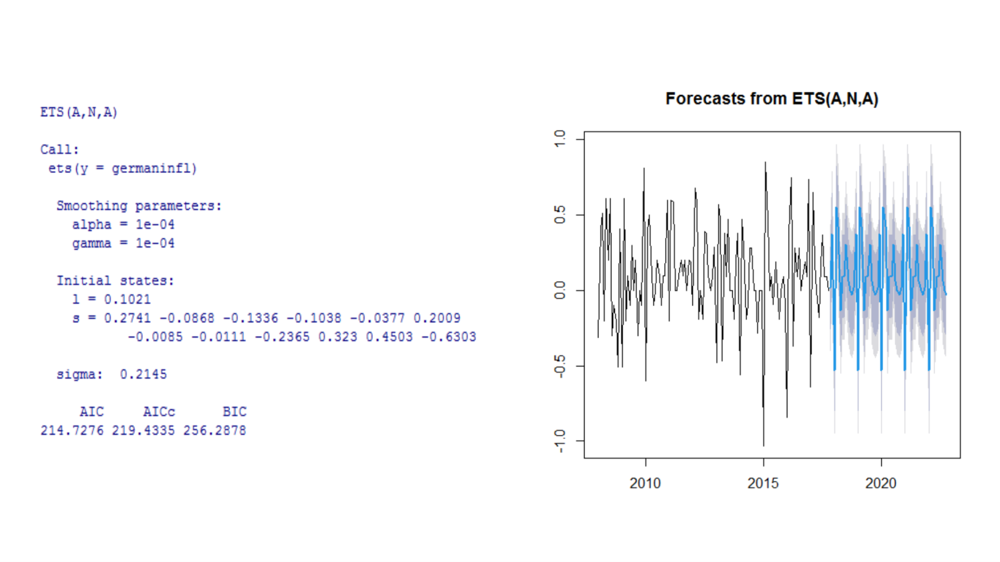
ข้อมูล german ควรเป็น ANA คือ error บวก ไม่มี trend และ seasonal บวก55 R ก็เลือก ETS(A,N,A) เช่นกัน ผลมี α กับ γ แต่ไม่มี β เพราะไม่มี trend จึงเป็นแบบ double ไม่ใช่ triple56 alpha และ gamma เท่ากับ 0.0001 ซึ่งใกล้ 0 แปลว่า level และ seasonal แทบไม่เปลี่ยนตลอด 10 ปี l = 0.1021 คือระดับเฉลี่ยของเงินเฟ้อราว 0.10 และค่า s 12 ค่ารวมกันเป็น 0 R พิมพ์ย้อนจากเดือนล่าสุด ค่าท้าย −0.6303 จึงเป็นของมกราคม และ 0.4503 เป็นของกุมภาพันธ์ ตรงกับตาราง ค่าพยากรณ์ 5 ปีข้างหน้าซ้ำลวดลาย 12 เดือนเดิมทุกปีรอบระดับคงที่ราว 0.1 ข้อควรระวังคือถ้าเขียน ts(data) โดยไม่ใส่ frequency = 12 R จะได้ ETS(A,N,N) ที่ AIC 315.63 แทน ETS(A,N,A) ที่ AIC 214.73 เพราะ ETS ต้องรู้ความยาวรอบก่อน ข้อนี้ถือเป็นข้อจำกัดของ ETS เพราะต้องตั้งสมมติฐานเรื่องรอบไว้ก่อน โมเดลรุ่นหลังจะหาความยาวรอบเอง แต่ถ้าคิดอะไรไม่ออก ใช้ ETS แล้วให้มันเลือกก็ได้ ขอแค่เข้าใจว่ามีพารามิเตอร์อะไรบ้าง57
germaninfl <- ts(read.table("german.txt"), start = 2008, frequency = 12)
# ถ้าข้อมูลเริ่มมีนาคม 2008 ใช้ start = c(2008, 3)
ets(germaninfl)
plot(forecast(ets(germaninfl), h = 60)) # 60 เดือน = 5 ปีETS(A,N,A)
Smoothing parameters: alpha = 1e-04 gamma = 1e-04
Initial states: l = 0.1021
s = 0.2741 -0.0868 -0.1336 -0.1038 -0.0377 0.2009 -0.0085 -0.0111 -0.2365 0.323 0.4503 -0.6303
sigma: 0.2145 AIC 214.7276 AICc 219.4335 BIC 256.2878
สไลด์หน้า 43 สรุปรหัสของ model ใน ets() ตัวแรกเป็น Z ให้ R เลือกชนิดของ error ตัวที่สองคือ trend และตัวที่สามคือ seasonal เช่น simple exponential smoothing คือ ZNN, Holt แบบบวกคือ ZAN, damped คือ ZAdN และ Holt-Winters ที่มี trend บวกกับ seasonal คูณคือ ZAM ถ้าใส่ ZZZ หรือไม่ใส่ model R จะเลือกโมเดลที่ AIC ต่ำสุด

ตัวอย่าง Excel ใช้ยอดขายบ้านรายเดือน m = 12, β = γ = 0.1 และ seasonal แบบคูณ ค่าเริ่มต้นของ seasonal 12 เดือนได้จากค่าของแต่ละเดือนในปีแรกหารด้วยค่าเฉลี่ยของปีนั้น เช่น เมษายน 0.98744 และมิถุนายน 1.27623 ค่าเริ่มต้นของ level คือ \(L_{13}=Y_{13}/S_1\) ตัวอย่างการคำนวณหนึ่งแถวคือ \(T_{14}=0.1(283627-254819)+0.9(37247)=2880.8+33522.3=36403.1\) และค่าพยากรณ์เมษายนคือ \(F_{17}=(L_{16}+T_{16})\times S_4=(309554+35355.4)\times0.98744=340577\) ตารางแสดง 340,575 ส่วนต่างมาจากการปัดเศษ
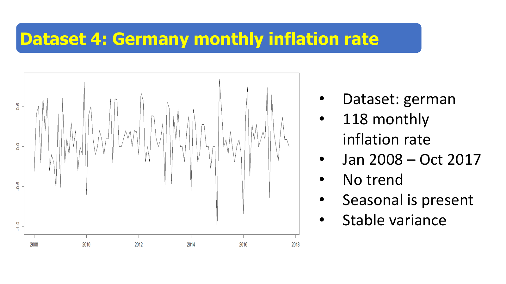
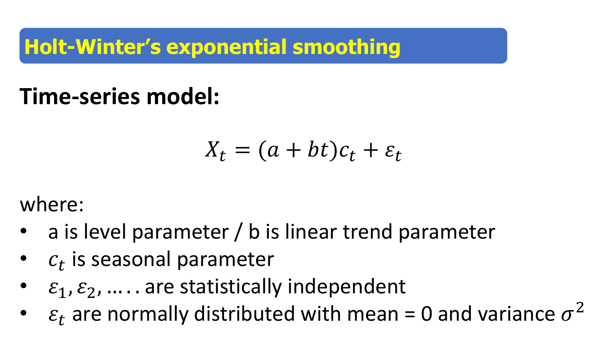

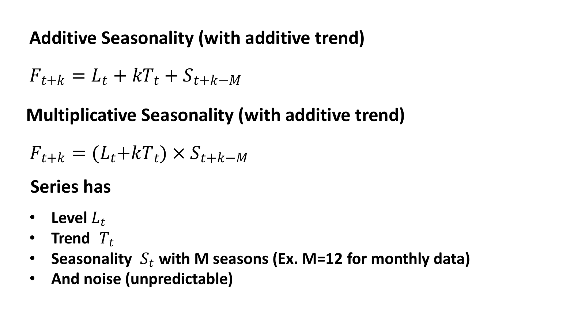
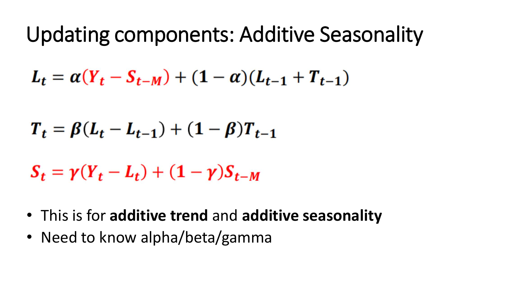
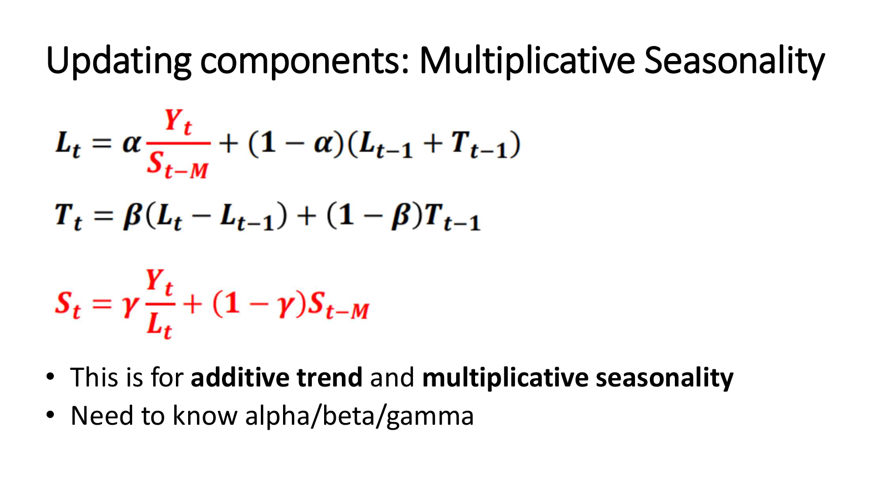

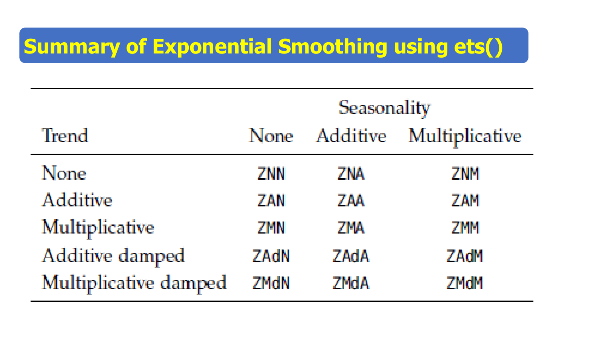
decomposition ใน R ไม่ได้ออกแบบมาเพื่อพยากรณ์ แต่เพื่อแยกองค์ประกอบ แต่ถ้าทำใน Excel ด้วย regression จะพยากรณ์ได้ และอาจดีพอ ๆ กับ ETS58 การหา trend ทำได้สองแบบ R ใช้ moving average ส่วนแบบที่ใช้ regression ดีกว่าและเป็นแบบที่ใช้สอนนักศึกษา MBA59 decomposition ใช้บรรยาย trend และ seasonal ของอนุกรม แบบที่ละเอียดกว่าอาจรวมรอบระยะยาว ผลของวันหยุด หรือวันในสัปดาห์ แต่ที่นี่ใช้แค่ trend กับ seasonal วัตถุประสงค์ข้อหนึ่งคือ estimate seasonal effects เพื่อสร้างค่าที่ปรับฤดูกาลแล้ว (seasonally adjusted) เช่น ยอดขายธันวาคมสูงกว่าพฤศจิกายนทุกปี ค่าดิบจึงบอกไม่ได้ว่าธุรกิจดีขึ้นจริงหรือเป็นแค่ผลของฤดู ค่าที่ปรับฤดูกาลแล้วตอบคำถามนี้ได้
โครงสร้างมีสองแบบ แบบบวก \(X_t=\text{Trend}+\text{Seasonal}+\text{Random}\) เหมาะเมื่อการแกว่งตามฤดูคงที่ คือ trend นิ่งและแกว่งไม่มาก แบบคูณ \(X_t=\text{Trend}\times\text{Seasonal}\times\text{Random}\) ใช้กับอนุกรมที่เปลี่ยนเร็วและแกว่งกว้าง60 สไลด์ระบุว่า •The seasonal effects are usually adjusted so that they average to 0 for an additive decomposition or they average to 1 for a multiplicative decomposition. เหตุผลคือ seasonal ต้องบอกเฉพาะส่วนที่เบี่ยงจากระดับปกติ ถ้าค่าเฉลี่ยของ seasonal ไม่เป็น 0 (หรือ 1) ส่วนเกินนั้นควรอยู่ใน trend ขั้นตอนมีสี่ขั้น ขั้นแรกประมาณ trend ด้วย moving average ซึ่งไม่มีสมการ หรือด้วย regression ซึ่งมีสมการ ไม่ว่าแบบบวกหรือคูณต้องหาเส้นนี้ก่อน ขั้นที่สองคือ de-trend แบบบวกให้ลบ trend ออก แบบคูณให้หารด้วย trend แล้วนำผลไปหา seasonal index61 ขั้นที่สามประมาณ seasonal จากค่าที่ de-trend แล้ว ข้อมูลรายเดือนได้ 12 ค่า รายไตรมาสได้ 4 ค่า วิธีง่ายที่สุดคือเฉลี่ยค่า de-trend ของฤดูเดียวกัน แล้วปรับให้เฉลี่ยเป็น 0 หรือ 1 ขั้นที่สี่หา random แบบบวกคือ series − trend − seasonal แบบคูณคือ series ÷ (trend × seasonal) ส่วน error นี้ "ไม่ค่อยยุ่ง" ข้อจำกัดของวิธีนี้คือสมมติว่ามี seasonal index ที่ไตรมาส 1, 2, 3, 4 ซึ่งโมเดลประเภทอื่นอาจไม่มี62 เมื่อได้ trend กับ seasonal แล้ว การพยากรณ์คือ trend อนาคตบวกหรือคูณด้วย seasonal
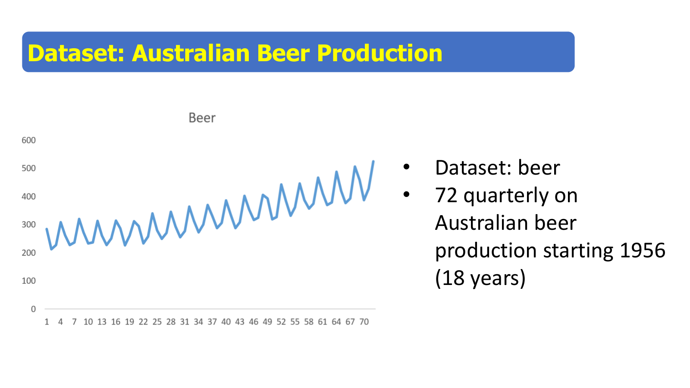
ข้อมูลตัวอย่างคือการผลิตเบียร์ของออสเตรเลียรายไตรมาส 72 ค่า หรือ 18 ปี เริ่มปี 195663 ค่าเริ่มที่ 284.4, 212.8, 226.9, 308.4 และขึ้นไปถึงราว 525 ในช่วงท้าย ไตรมาส 4 สูงสุดและไตรมาส 2 ต่ำสุดทุกปี มี trend ขาขึ้นและ seasonal รอบละ 4 ไตรมาส ระยะจากยอดถึงท้องกว้างขึ้นจากราว 95 เป็นราว 140 จึงค่อนไปทางแบบคูณ วิธี regression ทำทีละคอลัมน์ใน Excel (ไฟล์ Decompose Examples) ด้วยแบบคูณ
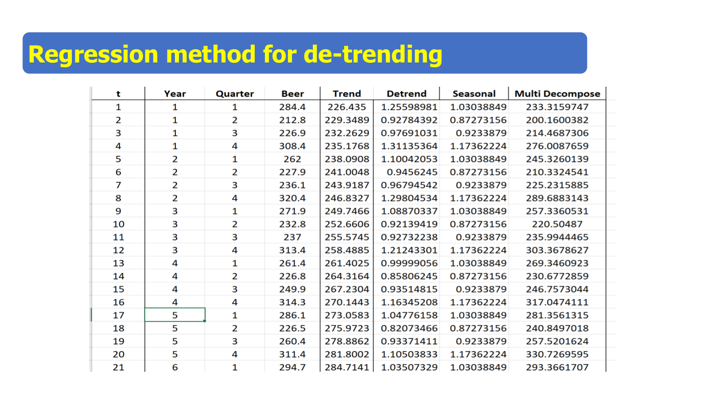
regress Beer บน t = 1, …, 72 ได้ \(T_t=223.521+2.914t\) จึงได้ \(T_1=226.435\), \(T_2=229.349\), …, \(T_{72}=433.326\) เส้นตรงนี้ยังเป็นค่าประมาณที่ไม่ดีนัก ต้องปรับด้วย seasonal64
t = 1: \(284.4/226.435=1.256\) t = 2: \(212.8/229.349=0.928\) ค่ามากกว่า 1 แปลว่าจุดนั้นสูงกว่า trend น้อยกว่า 1 คือต่ำกว่า
แต่ละไตรมาสมี 18 ค่า เฉลี่ยได้ Q1 1.0316, Q2 0.8739, Q3 0.9246, Q4 1.1748 อ่านได้ว่า "ไตรมาสที่ 2 โดย overall ยอดขายจะลงจาก trend ประมาณ 13% ไตรมาสที่ 4 จะสูงขึ้นประมาณ 17%"
ค่าเฉลี่ยของสี่ตัวคือ 1.0012 จึงลบ 0.0012 ทุกตัว ได้ Q1 1.0304, Q2 0.8727, Q3 0.9234, Q4 1.1736 (ถ้าเฉลี่ยเป็น 1.2 ก็ลบ 0.2 ทุกตัว)
t = 1: \(226.435\times1.0304=233.32\) t = 4: \(235.177\times1.1736=276.01\) ใส่ seasonal วนซ้ำ 18 รอบตามไตรมาส
t = 1: \(284.4/233.32=1.219\) ไตรมาสนั้นผลิตมากกว่าที่ trend และ seasonal อธิบายราว 22%
ผลที่ได้เหมือนเอานิ้วดึงเส้นตรงลงในไตรมาสที่ 2 ราว 13% และดึงขึ้นในไตรมาสที่ 4 ราว 17%65 เส้น fitted ทับข้อมูลจริงได้ดี RMSE ภายใน 72 จุดเท่ากับ 14.7 และ MAPE 3.8%

การพยากรณ์ทำได้ทันที คือต่อเส้นตรงไปยังเวลาในอนาคต แล้วคูณด้วย seasonal ของไตรมาสนั้น66 ปีที่ 19 มี \(T_{73}=223.521+2.914(73)=436.24\), \(T_{74}=439.15\), \(T_{75}=442.07\) และ \(T_{76}=444.98\) คูณด้วย seasonal ได้ Q1 \(436.24\times1.0304=449.5\), Q2 \(439.15\times0.8727=383.3\), Q3 \(442.07\times0.9234=408.2\) และ Q4 \(444.98\times1.1736=522.2\) ถ้าอยากพยากรณ์ไกลกว่านั้นก็ลากเส้นต่อไปแล้วแปะ seasonal ซ้ำ ในกราฟ เส้น trend ตรงจากราว 226 ถึง 445 และ fitted ทับข้อมูลจริงเกือบตลอดก่อนต่อไปถึงจุดที่ 76 จุดเด่นของวิธี regression คือมีสมการของ trend จึงพยากรณ์อนาคตได้ตรง ๆ และไม่มีค่าหายที่หัวท้าย สำหรับแบบบวกทำแบบเดียวกัน แต่ detrend เป็น Beer − Trend ได้ seasonal ในหน่วยเดียวกับข้อมูล แล้วนำไปบวกกับ trend67 คำนวณกับข้อมูลเดียวกันได้ Q1 +8.69, Q2 −41.19, Q3 −24.99, Q4 +57.49 ซึ่งเฉลี่ยเป็น 0 อยู่แล้ว
R ใช้ขั้นตอนเดียวกัน ต่างแค่ขั้นแรกที่หา trend ด้วย centered moving average แทน regression68 trend ของ R มาจาก centered moving average ที่ span 4 เพราะหนึ่งปีมีสี่ไตรมาส เป็นค่าเฉลี่ยของค่าเฉลี่ยอีกทีหนึ่ง69 เฉลี่ยเวลา 1–4 ได้ค่าที่จุดกึ่งกลาง 2.5 เฉลี่ยเวลา 2–5 ได้ค่าที่ 3.5 ซึ่งไม่ใช่เวลาที่มีข้อมูลทั้งคู่ เมื่อเฉลี่ยสองค่านี้อีกครั้ง จุดกึ่งกลางคือ 3 ตรงกับเวลาที่มีข้อมูลพอดี กระจาย \(\tfrac12[\tfrac14(x_1+x_2+x_3+x_4)+\tfrac14(x_2+x_3+x_4+x_5)]\) จะได้น้ำหนัก \(\tfrac18x_1+\tfrac14x_2+\tfrac14x_3+\tfrac14x_4+\tfrac18x_5\) ค่า \(x_1\) กับ \(x_5\) อยู่ในวงเล็บเดียวจึงได้ 1/8 ส่วนสามตัวกลางอยู่ทั้งสองวงเล็บจึงได้ 1/4 และเพราะ \(x_1\) กับ \(x_5\) เป็นไตรมาสเดียวกันคนละปี ทุกไตรมาสจึงได้น้ำหนักรวม 1/4 เท่ากัน ผลของฤดูหักล้างกันหมด เหลือแต่ trend
\(\tfrac18(284.4)+\tfrac14(212.8+226.9+308.4)+\tfrac18(262)=35.55+187.025+32.75=255.325\)
\(\tfrac18(212.8)+\tfrac14(226.9+308.4+262)+\tfrac18(227.9)=26.6+199.325+28.4875=254.4125\)
ข้อมูลรายไตรมาสหาย 2 จุดแรกและ 2 จุดท้าย ถ้าเป็นรายเดือนจะหาย 6 ตัวแรกและ 6 ตัวท้าย เริ่มที่ \(x_7\) เพราะสูตรต้องใช้ \(x_{t-6}\) ถึง \(x_{t+6}\)70
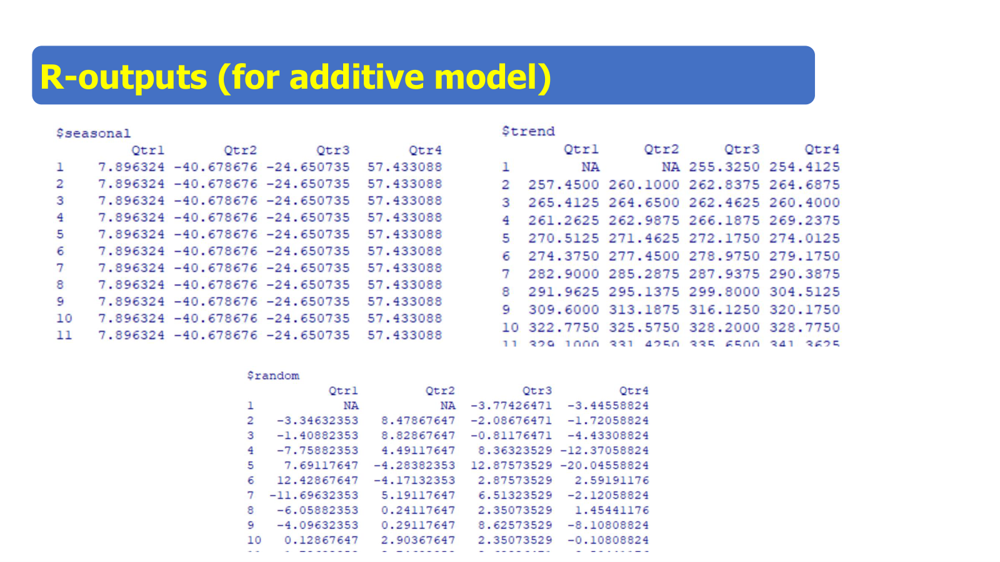
R แสดงสี่ส่วนสำหรับแต่ละแบบ คือ observed, trend, seasonal และ random ส่วน trend เหมือนกันทั้งสองแบบเพราะมาจาก centered moving average ชุดเดียวกัน seasonal แบบบวกคือ Qtr1 7.896, Qtr2 −40.679, Qtr3 −24.651 และ Qtr4 57.433 ค่าเหล่านี้ใหญ่เพราะเป็นแบบบวก ถ้าเป็นแบบคูณจะอยู่ราว 171 trend ปีแรกเป็น NA ที่ Qtr1 และ Qtr2 แล้วเป็น 255.325 และ 254.4125 ส่วน random ปีแรกคือ −3.774 และ −3.446 ตรวจด้วยมือได้ว่า Qtr3 ปีแรกคือ \(226.9-255.325-(-24.651)=-3.774\) และค่าเฉลี่ยของ seasonal ทั้งสี่ \((7.896-40.679-24.651+57.433)/4\approx0\) ส่วน random ควรไม่มีแบบแผน ถ้ายังเห็นรอบซ้ำหรือ trend แปลว่าแยกไม่หมด
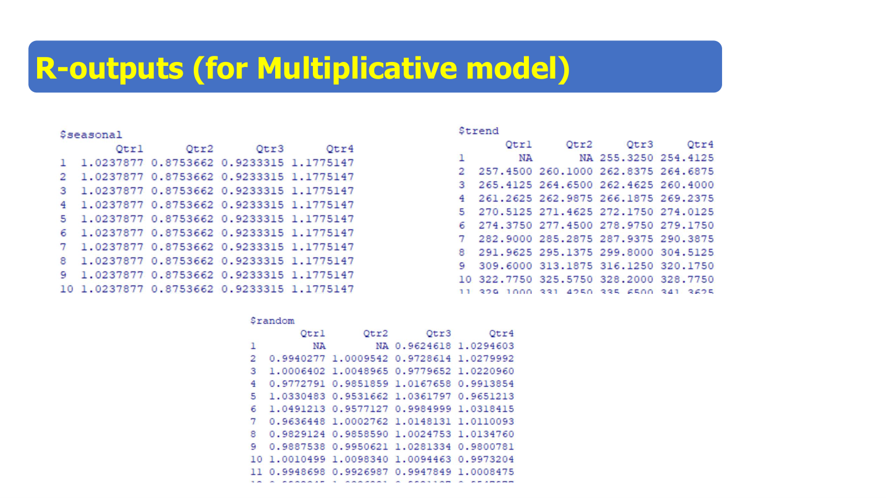
seasonal แบบคูณของ R คือ 1.0238, 0.8754, 0.9233 และ 1.1775 ซึ่งเฉลี่ยเป็น 1 และใกล้เคียงกับวิธี regression72 ซึ่งได้ 1.0304, 0.8727, 0.9234 และ 1.1736 ความต่างเล็กน้อยมาจาก trend ที่ใช้ต่างกัน random ปีแรก Qtr3 คือ \(226.9/(255.325\times0.9233)=0.9625\) ค่า Qtr4 ที่ 1.1775 แปลว่าไตรมาส 4 ผลิตมากกว่า trend 17.75% และไฟล์ R ของวิชาบอกวิธีปรับค่าอนาคตให้เป็น seasonally adjusted คือหารด้วย seasonal เช่น ไตรมาส 4 ได้ 535 จะได้ \(535/1.1775=454.3\)
เมื่อเทียบสองวิธี centered moving average ของ R ไม่มีสมการของ trend ค่า trend ที่หัวและท้ายเป็น NA และพยากรณ์อนาคตตรง ๆ ไม่ได้ แม้ trend จะโค้งตามข้อมูลได้ ส่วนวิธี regression มีสมการ เช่น 223.521 + 2.914t ค่า trend ครบทุกจุด และพยากรณ์ได้ด้วยการต่อเส้นแล้วคูณหรือบวก seasonal แบบ R จึงไม่เหมาะกับการพยากรณ์ เพราะทำแค่ smoothing และหายไปทั้งหัวและท้าย ถ้าจะพยากรณ์ควรใช้แบบ Excel73 วิธีเดียวกันนี้ใช้กับข้อมูล Xbox รายเดือนใน Class 5 และเมื่อเทียบกับ ETS(M,A,M) ได้ค่าพยากรณ์ที่ใกล้เคียงกัน74 รายละเอียดของ Xbox อยู่ใน Lesson 5 ซึ่งใช้ไฟล์ R ของ Lecture 5
beerprod <- ts(read.table("beer.txt"), freq = 4) # อย่าลืมบอกว่าเป็นรายไตรมาส
decompbeer <- decompose(beerprod, type = "additive"); plot(decompbeer)
decompbeermult <- decompose(beerprod, type = "multiplicative")
trendpattern <- filter(beerprod, filter = c(1/8, 1/4, 1/4, 1/4, 1/8), sides = 2)freq = 4 บอกว่าข้อมูลรายไตรมาส "อย่าลืมบอกโปรแกรมว่าเป็น quarter" ถ้ารายเดือนใช้ 12 และ filter(..., sides = 2) คำนวณ centered moving average เองด้วยน้ำหนักข้างบน โดยใช้ทั้งสองข้าง


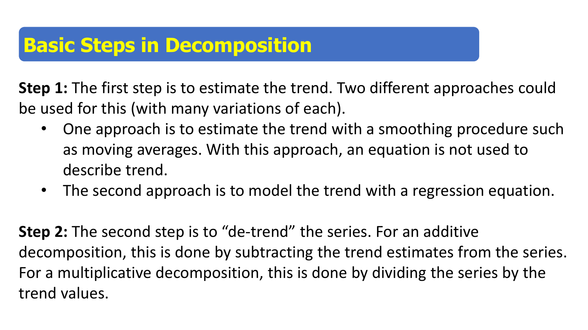
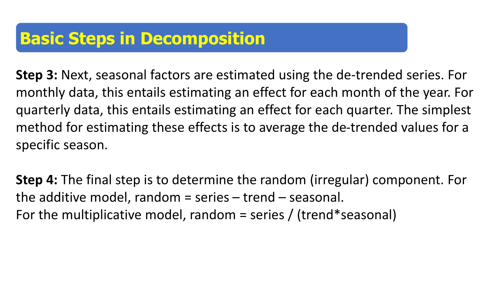
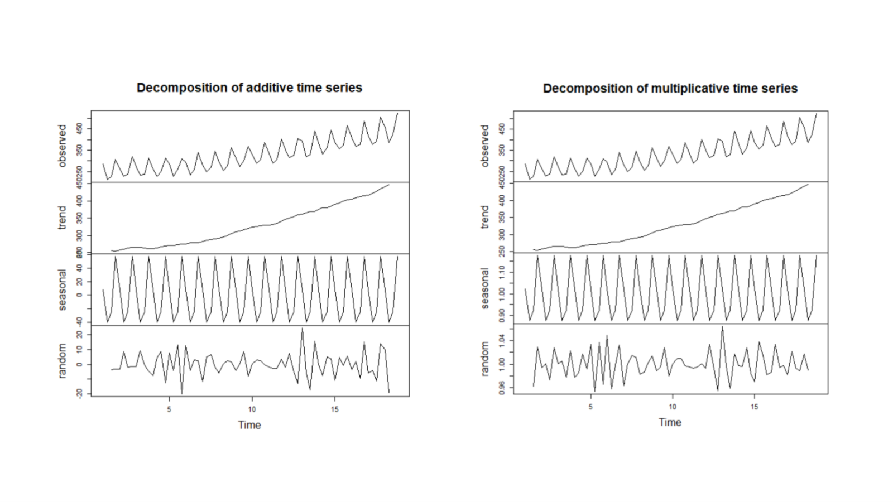
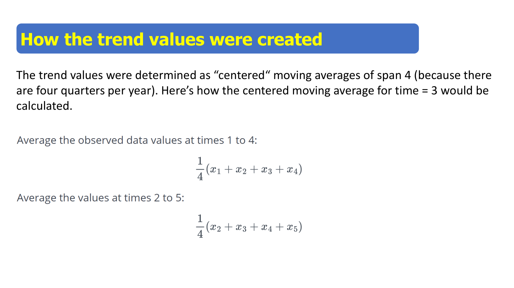

ลองฝึกต่อในแบบฝึก Lesson 4 (แนวควิซ Excel) หรืออ่านต่อ Lesson 5 — MA และ AR
ตัวเลขยกในเนื้อหาชี้มาที่รายการนี้ แต่ละรายการระบุคลาสและนาทีของคลิป พร้อมถ้อยคำในคลิปเมื่อมี
| หน้า | เนื้อหา | อยู่ในตอน |
|---|---|---|
| 1 | ปก Smoothing Methods | etc — ปก |
| 2–10 | Forecasting techniques, moving average, CPALL, SMA | ตอน 1 |
| 11–14 | EMA, เทียบ SMA กับ EMA | ตอน 2 |
| 15 | หน้าคั่น Advance Exponential Smoothing | etc — หน้าคั่น |
| 16–33 | ตระกูล exponential smoothing, ETS, Holt, Excel และ R, damped trend (Singapore) | ตอน 3 |
| 34–44 | German inflation, Holt-Winters, ets() summary, Excel | ตอน 4 |
| 45 | ลิงก์คลิป YouTube สอนพยากรณ์ด้วย Excel | etc — ลิงก์อ้างอิง |
| 46 | หน้าคั่น Decomposition Models | etc — หน้าคั่น |
| 47–58 | Decomposition, Australian beer, decompose() ใน R, centered moving average, regression method | ตอน 5 |
แหล่งอื่นที่ใช้: Class 4 ทั้งคาบ (ตอน 1–4), Class 5 ช่วง 0:00–1:04 (decomposition, Xbox) และ 2:10 (ควิซ Excel), ไฟล์ R_codes, CPALL, sales, singapore, german, beer, Smoothing Examples.xlsx และ Decompose Examples.xlsx ในโฟลเดอร์ CLASS 4